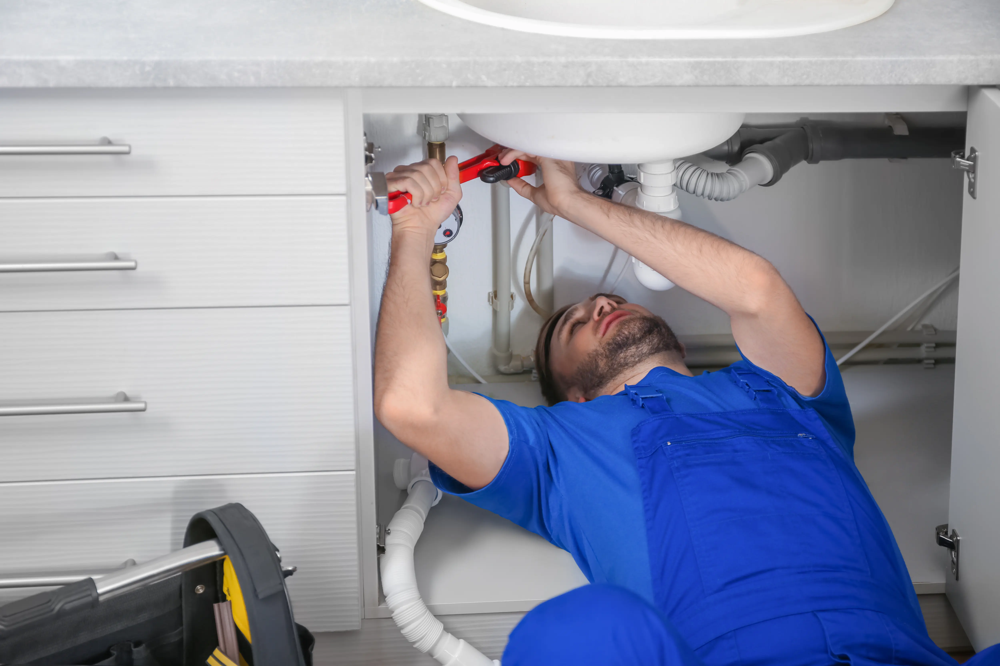
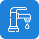
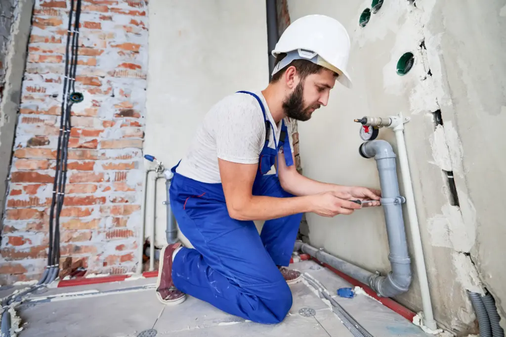
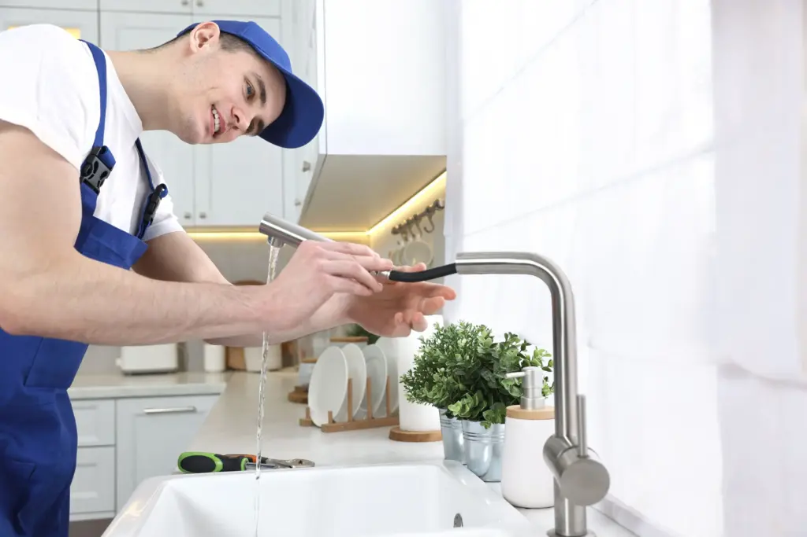
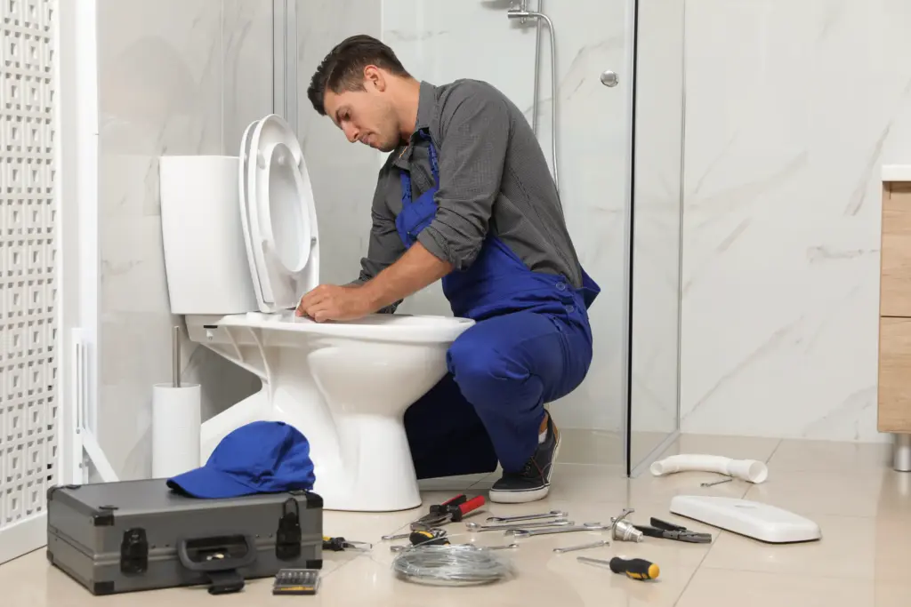
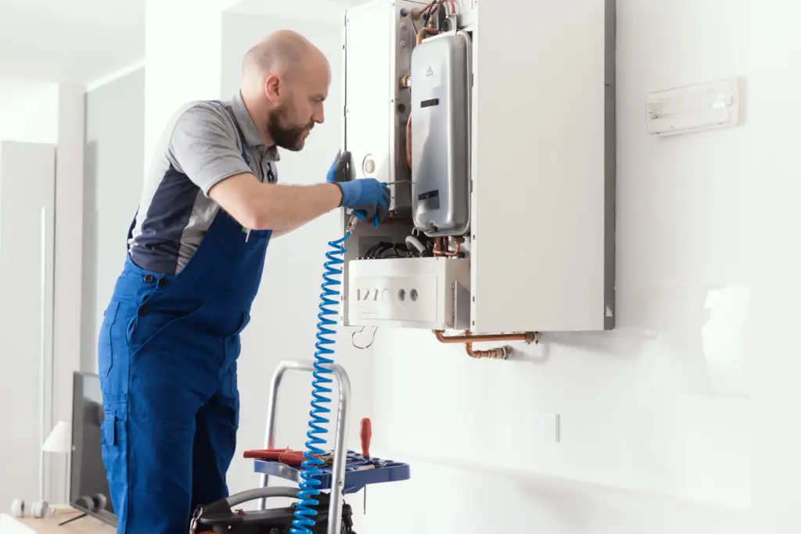

Leak Detection & Repair
We quickly locate and repair hidden leaks to prevent serious water damage and reduce costly utility bills.
Calgary’s Trusted Plumbing Team
From urgent leaks to pipe repairs, Lynx Plumbing provides fast, dependable plumbing solutions to keep your Calgary home safe, comfortable, and running smoothly.
About Us
Our experienced plumbers provide reliable repairs, installations, and maintenance for homes and businesses throughout Calgary, Alberta. From minor leaks to complex plumbing issues, we deliver quality workmanship and dependable solutions you can always trust with confidence.
More About UsOur team is committed to quality workmanship, dependable service, and lasting plumbing solutions for every property.

Our Services
We quickly locate and repair hidden leaks to prevent serious water damage and reduce costly utility bills.

Upgrade or replace kitchen and bathroom faucets with professional installation services and lasting performance.
From clogged toilets to complete replacements, we provide fast reliable solutions for every bathroom.
Professional installation, repair, and maintenance for traditional and tankless water heating systems.
Remove stubborn clogs and restore smooth proper drainage using safe and effective cleaning techniques.
Available when you need us most, our emergency plumbing service resolves urgent issues quickly and professionally.
Why Choose Us
We deliver dependable plumbing solutions with experienced professionals, quality workmanship, and service you can count on.
 ★★★★★
★★★★★Trusted by homeowners and businesses for reliable plumbing solutions, professional service, and quality results.
Our skilled plumbers handle every project with care, precision, and practical experience.
We quickly identify plumbing issues and provide efficient solutions to keep your system running.
We help keep your hot and cold water systems performing reliably throughout your home.
We deliver quality workmanship and dependable service for consistently lasting results.
Our Project

We located a hidden water leak, repaired the damaged pipe, and helped protect the property from further moisture damage.

We installed a modern kitchen faucet, secured all connections, and tested water flow to ensure smooth, reliable performance.

We replaced an outdated toilet, secured the new installation, and tested flushing performance to ensure dependable bathroom operation.

We serviced the existing water heater, addressed performance issues, and restored consistent hot water for the building’s daily needs.
Testimonials
Discover what homeowners and businesses say about our reliable service, professional workmanship, and commitment to solving.
“Lynx Plumbing found our hidden water leak very quickly and explained every step very clearly. Their team worked efficiently and left everything clean afterward.”
“I was impressed by how quickly Lynx Plumbing identified our leaking faucet and fixed it. The plumber was friendly, professional, extremely helpful, and very thorough.”
“We had a serious pipe issue at our business, and Lynx Plumbing responded quickly. The repair was professional, efficient, and completed without unnecessary delays.”
Professional Plumbing Services
Trust our skilled team for professional plumbing solutions, quality workmanship, and dependable results that last.
FAQ
Find quick answers to common questions about our plumbing services, pricing, scheduling, and emergency support.
Yes, our team provides reliable emergency plumbing services for leaks, clogs, burst pipes, and urgent plumbing issues.
Yes, we provide clear estimates before starting work, with no unexpected charges.
Yes, we provide water heater inspections, repairs, maintenance, and installation services.
Absolutely, our experienced plumbers can locate leaks and provide efficient, lasting repairs.
Yes, simply submit our online booking form to schedule a convenient appointment.
Response time depends on your location, but we always aim to reach customers as quickly as possible.
Our Blog
Discover easy preventive measures that help protect your home from plumbing problems.
Learn how early leak detection can prevent costly damage and plumbing repairs.
Follow practical maintenance tips to improve water heater performance and extend its life.